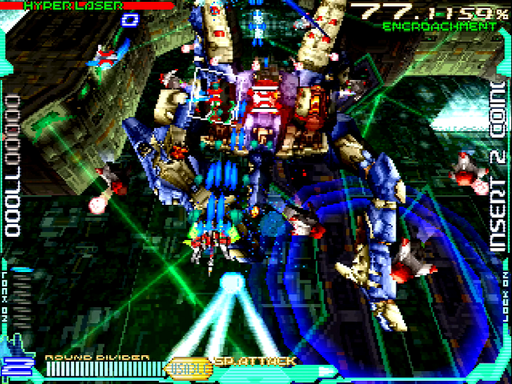
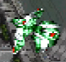

知能領域(Intelligence Part)/都市面・昼
全体としての難易度はそこそこですが、要所でやっかいな殺しポイントがあります。どう抜けるか、考えておきましょう。
ちなみに、攻略本のインタビューいわくベースは「横浜」だそうです。
道中
チェックポイント
1つ目
画像のE051×7機が出きった少し後
2つ目
地下の大型車両格納倉庫へのシャッター2枚が完全に開ききる辺り
通常パターン
開幕はアイテムキャリアーを右から出し、左のM052に重なるところをハイパーレーザーします。このように。
それでもまだパーツが残る(と思う)ので、それはE384のロック稼ぎに使います。
この後に現れるE015は、ショットで倒します。ロックオンレーザーは、地上敵(＝ショットが当たらない)かつ攻撃の鬱陶しいE051に充てましょう。
この辺りで1つ目のチェックポイントを通過して、配置タイプが2になるはず6。厄介なのがE547です。ランダムに動くうえ距離が近いので、衝突もしばしば。
無理に全部倒そうとせず、近寄ってきそうな奴だけショットやレーザーで始末したらやり過ごします。
シャッターの奥からE328×5とM329×2のセットが撃ってきます。後者の砲塔部はレーザー3本分の耐久力があるので、しっかり破壊を確認しましょう。
後半の山場が、この対空レーザー砲台10地帯。一度ふわっと浮上して、自機と同高度になったら突っ込んできます。
そのタイミングでチョン避けするか、撃たれる前に速攻すべし。最後の門番はM0111。全方位にスライドする弾をばらまいてくるため、どうしても見て抜ける必要があります。
開幕にハイパーレーザーを決め、しっかりショットを当てて粘りましょう。2面以降であれば、ラウンドディバイダーを検討しても良いかもしれません。
ランク調整パターン
1面の場合
対空レーザー砲台10地帯まで、E9912とアイテムを落とす敵以外は逃がします。右端のE1713はスペシャルパワーアップアイテムを落とすので、しっかり回収。
対空レーザー砲台10は、単発レーザーを連射して一気に片付けます。侵食率が大きく下がるので、ここまでは90%を維持していて構わない訳ですね。
M0111も、倒すとガツンと下がってしまいますが・・・危険なので、仕方ないでしょう。それ以外徹底して逃がせば、痛くはないはずです。通常パターンと比べ、かなりゆるいのが分かります。
2面の場合
E051を全滅させるくだりまでは、通常パターンと同様に進みます。そこからは敵を逃がし、侵食率を60%台後半に保ちます。自機狙いと突進を持つE1214だけは厄介なので、ショットで倒しましょう。
対空レーザー砲台10地帯も同様に、E1214をショットで倒します。M0111を倒すと侵食率54%ぐらいでボス戦に突入しますが、あえて形態移行をワンテンポ遅らせるなど調整すれば、60%台で撃破できるはずです。
3面の場合
開幕は侵食率を下げすぎないよう、ハイパーレーザーを使わずM052を倒します。E384はショット、E051は単発レーザー・・・と使い分けましょう。2つ目のチェックポイントまで侵食率40%台を維持します。
後はもう、片っ端から倒します。むしろ逃がすと、侵食率が高すぎてinfinityに入れないなんて事になり得るため、ロックを欲張りつつ行きましょう。
ボス「Pro-tor/Daylight」
耐久力(単位：レーザー本数)
- 1面：130
- 2面(第1形態/第2形態)：140/70
- 3面(第1形態/第2形態)：180/90
- パーツ
- 脚部：30
- ミサイルポッド：50
- ミサイル：1
- ビット：15
基本的なこと
このボスは地上敵のため、本体にショットが当たりません。よって、ひたすら本体にレーザーをかますのが基本になります。
特にWR-01RとWR-02Rは、ハイパーレーザーを的確に叩き込めると生存率が大きく上がります。余計なパーツをロックしない位置取りを死守しましょう。
第1形態
開幕は3つのパターンがランダムで襲ってきます。詳細は以下の通り。
パターンA：5WAYピンク弾＋バラまきオレンジ弾
攻撃としては一番素直で、アタリと言えます。4セット目が発射されたぐらいでラウンドディバイダーを使うと、より安全。パターンB：5WAYピンク弾＋ホーミングミサイル
妙な軌道&判定の強いミサイルがクセモノ。微妙にふわっとしており、自機狙いのノリで避けるとお尻をえぐられて死にます。
ムダに固いので、迎撃せず大きく逃げましょう。パターンC：ホーミングミサイル＋バラまきオレンジ弾
上記2つの複合・・・と書けば、これが一番ヤバいのは想像が付くでしょう。このパターンが来た場合は、潔くハイパーレーザーを諦めて回避に専念します。
開幕が済むと、本体からビット2基を展開してきます。無視して本体を狙いましょう。ハイパーレーザーに運良く巻き込んで倒せる事もあります。
ただし接近距離は振れがあり、かなり手前からばら撒いてくる事もあります。そのような場合は、こちらが少し前に出て避けましょう。なお、1面できっちり撃ち込むとこの辺りで倒せます。その後、高度を変えて着弾式ボムが来ます。少し前に居た場所へロックオンしてくるので、画面をゆっくり逃げれば当たりません。
ただし、爆風の判定は長時間残るので油断すべからず。
第2形態
着弾式ボムのあと、高度が戻ってから攻撃を当てれば形態移行するはずです。グーッと奥へ引いて、それから反時計回りにスクロールしていきます。真ん中から始めて奥へ進み、左で粘ってハイパーレーザーをめいっぱい撃ちましょう。
いったん本体が画面外へ出たのち、左上からまた戻ってきます。待ち構えて、最速でハイパーレーザー。2面の場合、画面外へ出るまでに3回ハイパーレーザーしていれば、これで倒せます。3面であっても、あと2, 3回ハイパーレーザーをかませば大体終わります。
しかし、発狂を避けさせられる事もあります。正直なところ、これは放射状弾のY軸が全てです。自機の手前に放射状弾が来たら・・・運です。
使えるなら、迷わずラウンドディバイダーを撃ちましょう。
1. E05「ε Morphemes」 ↩
2.M05「Lexicon LE1R」 ↩
3. M00「Lexicon E3」 ↩
4.E38「π Morphemes」 ↩
5. E01「α Morphemes」 ↩
6. よほど稼いで侵食率を下げない限りは。もし3になったらやりすぎですので、攻めのペースを落としてください ↩
7. E54「φ Morphemes」 ↩
8. E32「Syntax A-1」 ↩
9. M32「Lexicon S-5」 ↩
10.対空レーザー砲台「Syntax A-6」 ↩
11. M01「Lexicon AT1」 ↩
12.E99「Proto Morphemes」 ↩
13. E17「λ Morphemes」 ↩
14. E12「ι Morphemes」 ↩